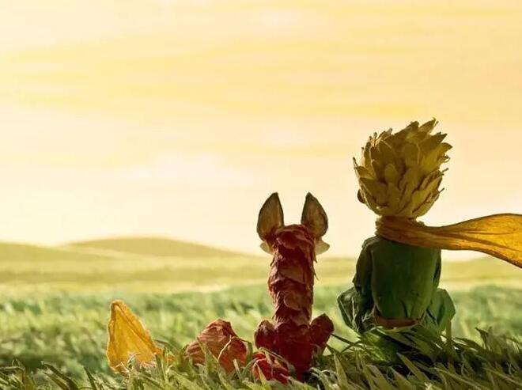

小说叙述者是个飞行员，他在故事一开始告诉读者，他在大人世界找不到一个说话投机的人，因为大人都太讲实际了。
接着，飞行员讲了六年前他因飞机故障迫降在撒哈拉沙漠遇见小王子的故事。神秘的小王子来自另一个星球。飞行员讲了小王子和他的玫瑰的故事。小王子为什么离开自己的星球；在抵达地球之前，他又访问过哪些星球。他转述了小王子对六个星球的历险，他遇见了国王、爱虚荣的人、酒鬼、商人、点灯人、地理学家、蛇、三枚花瓣的沙漠花、玫瑰园、扳道工、商贩、狐狸以及我们的叙述者飞行员本人。
飞行员和小王子在沙漠中共同拥有过一段极为珍贵的友谊。当小王子离开地球时，飞行员非常悲伤。他一直非常怀念他们共度的时光。他为纪念小王子写了这部小说。
接着，飞行员讲了六年前他因飞机故障迫降在撒哈拉沙漠遇见小王子的故事。神秘的小王子来自另一个星球。飞行员讲了小王子和他的玫瑰的故事。小王子为什么离开自己的星球；在抵达地球之前，他又访问过哪些星球。他转述了小王子对六个星球的历险，他遇见了国王、爱虚荣的人、酒鬼、商人、点灯人、地理学家、蛇、三枚花瓣的沙漠花、玫瑰园、扳道工、商贩、狐狸以及我们的叙述者飞行员本人。
飞行员和小王子在沙漠中共同拥有过一段极为珍贵的友谊。当小王子离开地球时，飞行员非常悲伤。他一直非常怀念他们共度的时光。他为纪念小王子写了这部小说。
